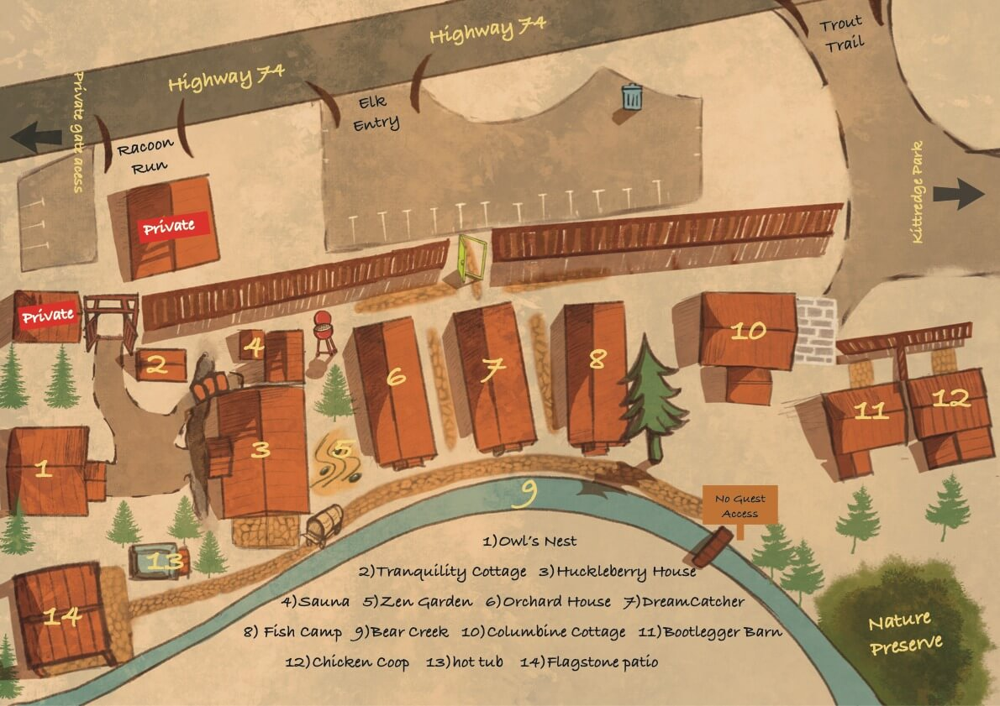

Guest Guidebook
Everything you need during your stay by the creek.
Quick Reference
Evergreen, CO 80439

1 Owl's Nest 2 Tranquility Cottage 3 Huckleberry House 4 Sauna 5 Zen Garden 6 Orchard House 7 DreamCatcher 8 Fish Camp 9 Bear Creek 10 Columbine Cottage 11 Bootlegger Barn 12 Chicken Coop 13 Hot Tub 14 Flagstone Patio
Guest parking: West Lot — off Racoon Run (Owl's Nest, Huckleberry House) · Main Lot — through the Elk Entry drive (Orchard House, DreamCatcher, Fish Camp) · East Lot — far right, by the stone wall (Columbine Cottage, Bootlegger Barn, Chicken Coop)
Arrival
Read this onceyour stay is booked
Welcome! A little planning goes a long way at 7,200 feet, so here's what to know before you head to the mountains.
Getting here
We're tucked along Bear Creek on the historic Lariat Loop (Highway 74), between Kittredge and downtown Evergreen.
- From Denver: about 35 minutes west.
- From Denver International Airport (DEN): about 1 hour.
- Downtown Evergreen: 5–7 minutes up the road.
- Red Rocks Amphitheatre: about 20 minutes down Bear Creek through Morrison.
Getting around
A car is the easiest way to explore, but you have options for nights out and airport runs:
- Uber & Lyft operate in the area (availability can vary in the mountains).
- Black Fox Transportation — a reliable private local option. blackfoxtransportation.com
Checking in
Check-in is after 3:00 PM. Your gate code activates at your confirmed check-in time — it won't work before then. Need early access, or a checkout later than 11:00 AM? Just reach out ahead of time; additional charges apply for early arrival or a late departure.
A note on the altitude
Evergreen sits above 7,000 feet, and the thin, dry mountain air surprises a lot of visitors. A few easy habits make the first day better:
- Drink more water than usual, and ease into hikes on day one.
- The sun is strong up here — sunscreen, even when it's cool.
- Alcohol and caffeine hit harder at elevation; go gently the first night.
What to pack
- Layers. Mountain mornings and nights are cool even in summer; days can be warm.
- Sturdy shoes for creekside paths and nearby trails.
- A rain shell. Afternoon thunderstorms roll through in summer.
- Groceries or a cooler if you'd like — most cabins have full or gourmet kitchens (see Your cabin).
Settling In
Your cabin &the grounds
Staying connected
Complimentary WiFi reaches throughout the property.
Network
Country Road Cabins
Password
auniqueretreat
Our canyon setting means the signal can occasionally wobble — we lovingly call it cabin magic. A quick reconnect usually does the trick. (More on that in the FAQs below.)
Your cabin
- Kitchens: Most cabins have fully equipped kitchens with cookware, utensils, and the basics. A few feature gourmet kitchenettes (fridge & microwave, no stove/oven), and the Bootlegger Barn has a compact kitchenette.
- Fireplaces: Your fireplace is controlled by a wall thermostat only — please don't touch the fireplace unit itself.
- Entertainment: Smart TVs with Chromecast in every cabin. Stream live TV through the Hulu app, or sign into your own Netflix, Disney+, Max, and more.
- Climate: No central air, but the foothills stay cool at night. Bedrooms have AC window units, and fans are available on request.
- Hair dryers are provided in every cabin.
Hot tub & sauna
Our shared hot tub and dry-heat sauna are open daily 6:00 AM – 10:00 PM. Please use them quietly during evening hours out of respect for other guests.
Hot tub: please shower before using the hot tub, and do not add anything to the water — we already treat it for you. When you're finished, replace the cover; it conserves energy and keeps the critters out.
Dry-heat sauna (northeast corner of the main grounds). To save energy it doesn't run continuously — start it yourself from the keypad on the front:
- Press Power to turn it on.
- Press “ON.”
- For more time, press the up arrow (up to 60 minutes).
- Give it a little time to come up to temperature before you step in.
Cabin keeping & trash
- Fresh towels and toiletries are delivered on request.
- Bed linens can be refreshed on request for an additional charge.
- Trash may be disposed of in our community dumpster.
- If you're cooking with strong odors, please remove that trash nightly to keep our cabins fresh for the next guest.
House rules, briefly
- To preserve our secluded, peaceful atmosphere, we allow up to 20 guests total across the property for all cabins — registered guests only. Please respect our other cabin guests' privacy by staying in the common areas, and off other cabins' porches and private areas.
- No pets, to keep every cabin clean and allergen-free. Please call us about service animal availability.
- No smoking anywhere on the property.
- No open-flame candles. Battery-operated candles are welcome.
Good to know (FAQs)
What is “cabin magic”?
It's our fond name for mountain living: the WiFi can occasionally wobble, and the power may briefly blip during big weather. If your WiFi drops, reconnecting your device usually fixes it. It's all part of the charm of unplugging by the creek.
What happens if the power goes out?
Power shutoffs can happen during high winds or heavy snow. Your cabin will stay heated, and we provide kits with candles, lightbulbs, and flashlights. Kittredge sits across several different power grids, so some areas may keep power while others don't.
Do the cabins have grills?
The cabins don't have private grills, but you're welcome to use the shared grill in our grill area — propane provided. Please grill with care: our county is currently at high fire risk.
Is there laundry on site?
No — the cabins don't have laundry facilities or service. There are laundromats a short drive away in the Evergreen area, and we're happy to point you toward the closest one.
Where can I find extra towels?
In the Tranquility Cottage — our little common-area cabin for reading and relaxing (#2 on the property map).
There's a pretty bridge over the creek — can I go on it?
It's tempting, but no — the footbridge leads to private property (you'll spot the “No Guest Access” sign). Please enjoy it from your side of the creek.
Can I turn the outdoor string lights off?
They stay on for the safety of all our guests — and they'll turn themselves off at 10:00 PM.
Why can't I use the hot tub after 10 PM?
For safety, and for the peace and quiet of everyone here. Sound travels along the creek and canyon, and we respect our guests and our neighbors.
Can I burn candles or have any open flame?
Absolutely not — we're in a very high-risk fire area, and we do our part to protect our pretty home. Battery-operated candles are welcome.
Can I smoke?
No — we're a no-smoking property.
Can I have pets?
No — pets aren't allowed, but we can try to make accommodations for service dogs with proper documentation.
Exploring the Area
Where the localseat, hike & wander
You're minutes from great coffee, creekside restaurants, and some of the best foothills hiking near Denver. A few of our favorites — Closest marks the spots practically next door.
Coffee & a quick bite
Breakfast & brunch
Lunch
Dinner
Breweries & wineries
Provisions & a nightcap
Hiking & the outdoors
Bear Creek runs right past your porch, and world-class foothills trails start just minutes away. A few nearby favorites, easiest to most:
Trailhead parking fills early on weekends — before 9 AM is your friend. Bring water, sun protection, and a layer.
Heading to Red Rocks?
The world-famous amphitheatre is about 20 minutes away — one of the best reasons our guests come back. Tips from folks who make the drive often:
- Come straight from the cabins. Heading down through Morrison lets you skip the worst of the Denver traffic on the way in.
- Rather not drive? Black Fox Transportation (blackfoxtransportation.com) is a reliable private local option for concert nights — book ahead on show days.
- Dress for any weather. Colorado is unpredictable and it's a lot of stairs — think layers, closed-toe shoes, and a poncho, just in case.
- Bags: single-pocket or clear bags no larger than 13"×15"×8"; purses/fanny packs 6"×9" or smaller. Have them open for inspection.
- Beverages: outside drinks aren't allowed in, but an empty reusable water bottle (32 oz or less) is — fill it at the stations inside. Leave gum and glass at home.
- Parking is free and lots open ~2 hours before showtime. Park in the lower south lot for the easiest exit back toward the cabins. Pin your spot and bring a small flashlight for the walk down.
- No re-entry once your ticket is scanned, so settle in before the show.
- Leave a bit early. Morrison traffic backs up before big concerts.
- Tailgating is half the fun. It's a big part of the Red Rocks tradition — grab a to-go charcuterie board from us to take with you!
- After the show: the Chick-fil-A truck will be waiting at the bottom — and keep an eye out for the famous Red Rocks raccoon parade on your way out!
Day trips, by direction
E To the East
- Morrison & Red Rocks — the amphitheatre & trading post (~20 min)
- Dinosaur Ridge — real dinosaur tracks & fossils
- Golden — Coors Brewery tour, Clear Creek, downtown (~30 min)
- Buffalo Bill Museum & Grave — atop Lookout Mountain
- Denver — museums, sports & city life (~35 min)
W To the West
- Idaho Springs — Argo Mill & Tunnel, hot springs, historic Main St.
- Georgetown Loop Railroad — historic mountain train
- Mount Blue Sky Scenic Byway — one of America's highest paved roads (seasonal)
- Black Hawk & Central City — mountain casinos (~30 min)
N To the North
- Boulder — Pearl Street, Flatirons, Chautauqua
- Estes Park & Rocky Mountain National Park — a full-day adventure
- The Stanley Hotel — the inspiration for The Shining
S To the South
- Colorado Springs — Garden of the Gods & Pikes Peak
- Deer Creek & Waterton Canyon — foothills hiking & biking
Before You Go
Checkout &safe travels
Checking out
Check-out is by 11:00 AM and includes the entire property. The card on file has already taken care of any incidentals. Please note that additional fees apply for early access before check-in or for a stay that extends beyond checkout.
A few kind things before you head out:
- Wash any dishes and leave them out to dry (only a few cabins have dishwashers).
- Sign out of any Netflix, Hulu, or other streaming accounts on the Smart TV.
- In our cooler months, please don't set thermostats below 65°F.
- Double-check for your chargers and any small belongings.
- Take a last few minutes on the porch — the creek won't mind.
Safety & peace of mind
- Emergencies: dial 911.
- Us, after hours: (303) 674-1901 — for true emergencies only, like a lockout or urgent maintenance issue. Wobbly WiFi or wildlife wandering outside are part of mountain life, not emergencies — those can wait until morning.
- Wildlife: black bears, elk, deer, and the occasional mountain lion call this canyon home. Never feed them, keep cabin doors closed, secure trash, and give elk plenty of space.
- Weather: summer afternoons can bring quick thunderstorms; winter roads may call for AWD or care. Check conditions before mountain drives.
One small favor
If your stay was everything you hoped, a kind review means the world to a small family-run property like ours. And we'd love to host you again — find us at thecabinsatcountryroad.com.